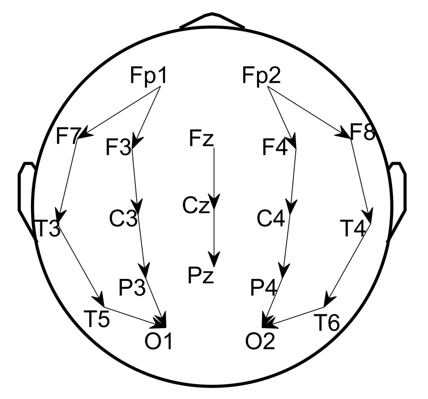
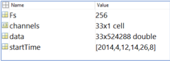

Requirements: MATLAB, EEGLAB (https://sccn.ucsd.edu/eeglab/index.php), and Python (Anaconda)
Input data: Raw EDF files inside .\Data\EDF\; scalp monopolar/C2 EEG that contains full set of 19 channels + 1 EKG (optional) as follows:
- Fp1 F3 C3 P3 F7 T3 T5 O1 Fz Cz Pz Fp2 F4 C4 P4 F8 T4 T6 O2 (EKG)

Step1: Read EDF to MAT using EEGLAB toolbox for MATLAB. Run script step1_readEDF2MAT.m, which converts EDF format to MAT format in .\Data\MAT\ that contains the following variables:
- data: EEG array
- channels: list of channel names in data
- Fs: the sampling rate of data
- startTime: the start time vector of data

Step2: Preprocess MAT to select/rearrange channels, resample to 200Hz , and denoise with [0.5 40Hz] band-pass and 5Hz band-stop centered at the power-line frequency (US: 60Hz UK: 50Hz). Output files are saved in .\Data\processed\.

Step3: run SPaRCNet (Python backend)
Configure Python
- Install anaconda3 and open a terminal
- $ conda create -n iiic python=3.6
- $ activate iiic
- $ conda install -c conda-forge hdf5storage
- $ pip install mne
- $ pip install torch==1.5.0+cpu torchvision==0.6.0+cpu -f https://download.pytorch.org/whl/torch_stable.html
Run MATLAB wrapper step3_runSPaRCNat.m
- CSV score table will be export to .\Data\iiic\
- Each row is the probabilities for 6 classes: Other, Seizure, LPD, GPD, LRDA, and GRDA
- Starting from the 1st 10sec EEG segment and moving at 2sec step in time
Eg. row #1: scores for [0 10sec], row #2: scores for [2 12sec], ...
Step4: Run step4_readCSV.m to read CSV to MAT to make sure every 2sec segment got scores. The output files are saved in .\Data\iiic\model_prediction\.
Step5: Run step5_computeSpectrograms to get regional average spectrograms in .\Data\Spectrograms\, which contains the following variables:
- Sdata: 4 regional average spectrograms
- stimes: time coordinates
- sfreqs: frequency coordinates
- params: spectrogram parameters
Step6: Compute embedding map (PaCMAP) and wrap all inputs into one task folder for each patient
- Configure PaCMAP (Python library: https://github.com/YingfanWang/PaCMAP)
- Run step6_prepare4GUI.m
Step7: Run GUI CMGUI_Sequential_BoWspreading_v3.m inside the task folder .\Task\subject01\
input rater initials to store scores.
click Start to continue.
Enter Phase #I: label K=50 clusters in a row.
Enter Phase #2: sequential inspect all labels.
Press Done button to seal and export the labels.
Please refer to slides on detailed instructions.